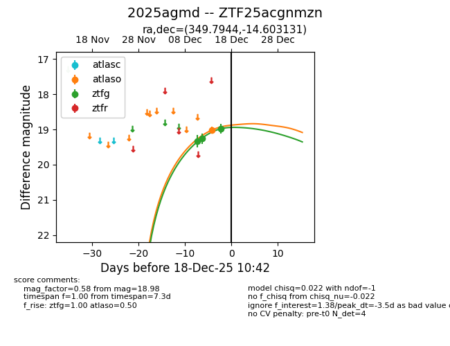
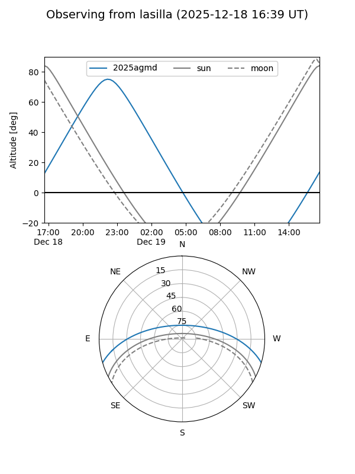
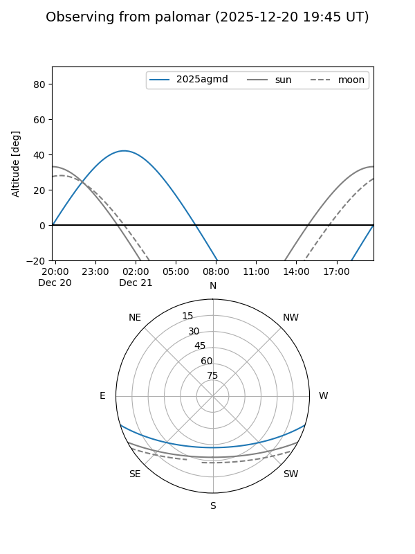
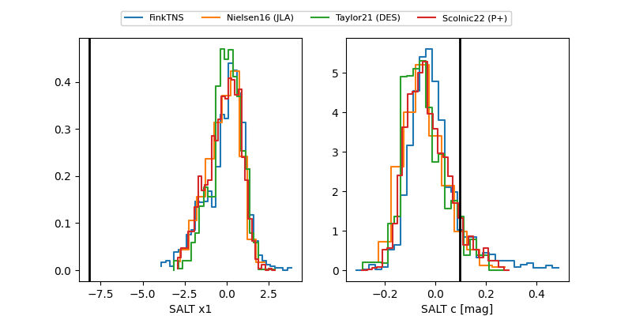

2025agmd
Target 2025agmd at 2025-12-31 18:00
Aliases and brokers:
FINK: link
Lasair: link
ALeRCE: link
TNS: link
YSE: link
alt names
ZTF25acgnmzn (ztf,fink_ztf)
2025agmd (tns,yse)
Coordinates:
equatorial (ra, dec) = 349.7944,-14.60313
equatorial (HMS+DMS) = 23:19:10.66,-14:36:11.27
galactic (l, b) = (58.5258,-65.14225)
Flags:
Photometry:
last atlaso=19.10, ztfg=18.98, ztfr=18.99
1 atlaso, 3 ztfg, 2 ztfr detections
Lightcurve

Visibility


Additional plots
